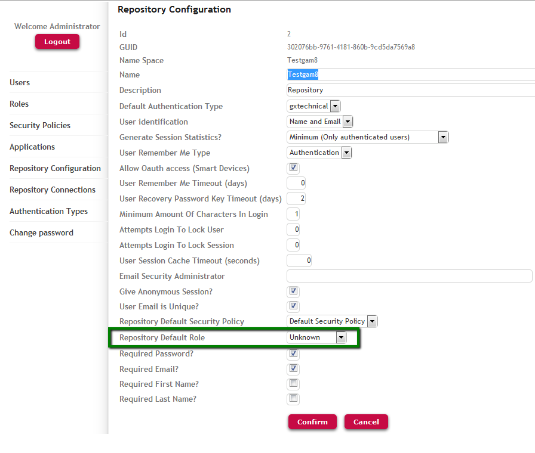

A Role is a way to group GAM Permissions in a GAM Application. They are organized in hierarchies of Roles (hierarchies can be defined using the GAM API).
From the GAM Web Backoffice you can create new roles, edit existing roles, and add permissions to a role that has already been defined in an application.
You can also associate a GAM Role with a User from the GAM Web Backoffice or the GAM API.
If a role is associated with a user, the role permissions are associated with that user. This means that when the user permissions are checked at execution time, the permissions associated with the user through the roles are taken into consideration. However, the permissions directly associated with the user have precedence.
As previously explained, if a role is associated with a user, the role permissions are indirectly associated with that user. This means that when the user permissions are checked at execution time, the permissions associated with the user through the roles are taken into consideration.
In addition, if the role has children, the permissions of the children roles are also associated with the user.
The Default Role of the GAM repository is by default the Unknown Role, but it can be changed by the administrator as shown in the figure below:

The "Repository Default Role" is granted to the user when he logs in without any roles. Its purpose is to assign a role to the users who haven't got any at the time of login.
The association with a Role is not physical, so the role isn't included in the list of roles of the user.